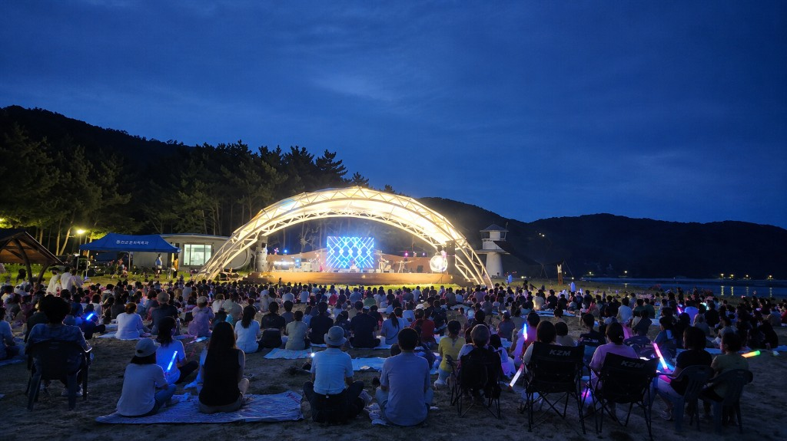
덕적도 ‘주섬주섬 음악회’
게스트 공연과 버스킹, 주민 동아리 공연, 해변 노래자랑까지. 덕적도 바닷가에서 여름밤의 음악을 함께 즐기는 대표 음악 축제입니다.
옹진의 축제를 즐겨보세요.

게스트 공연과 버스킹, 주민 동아리 공연, 해변 노래자랑까지. 덕적도 바닷가에서 여름밤의 음악을 함께 즐기는 대표 음악 축제입니다.
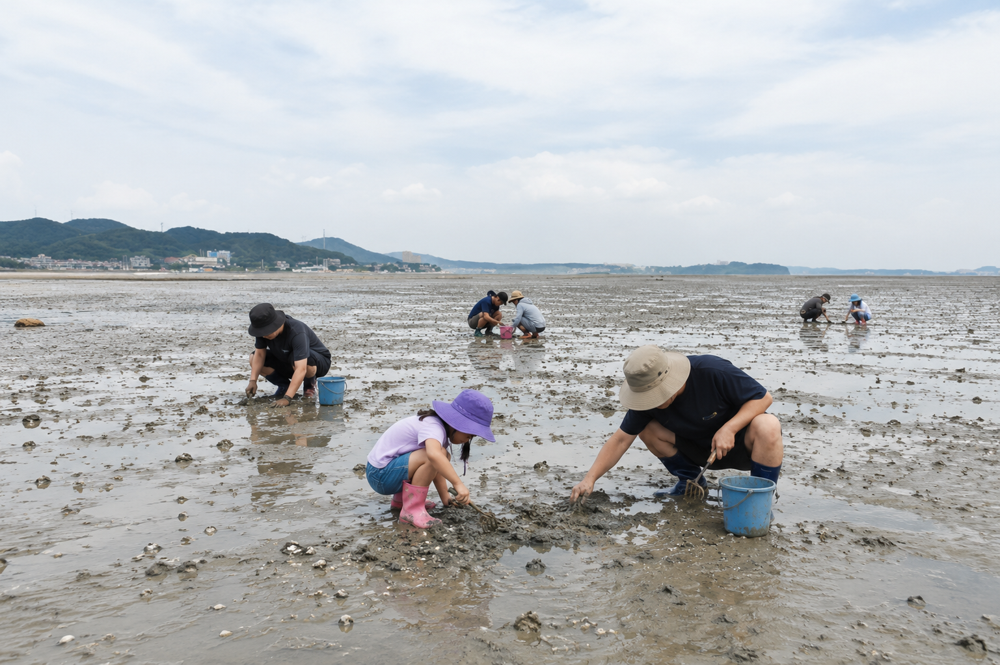
가족 테마 체험 프로그램과 챌린지, 다문화 놀이, 프리마켓이 열리는 하루. 세대가 함께 어울리는 영흥도의 가족 축제입니다.
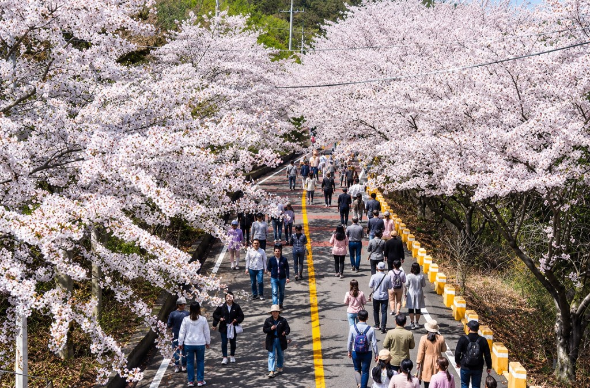
벚꽃길을 따라 걷는 장봉도의 봄 대표 축제. 포토존과 먹거리 부스, 주민 공연으로 봄날의 섬 풍경을 만끽할 수 있습니다.

캠핑과 스포츠를 한자리에서. 미니 스포츠 게임, BBQ 파티, 스포츠 중계 관람으로 활기찬 밤을 보내는 소야도 캠핑 페스티벌입니다.
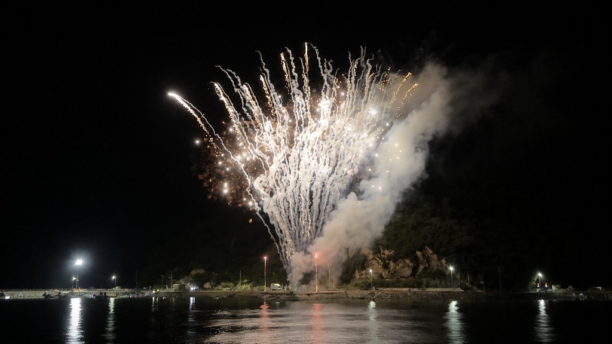
백령도 해변을 무대로 펼쳐지는 버스킹과 불꽃 쇼. 지역 아티스트와 방문객이 함께 만들어가는 여름 대표 공연 축제입니다.
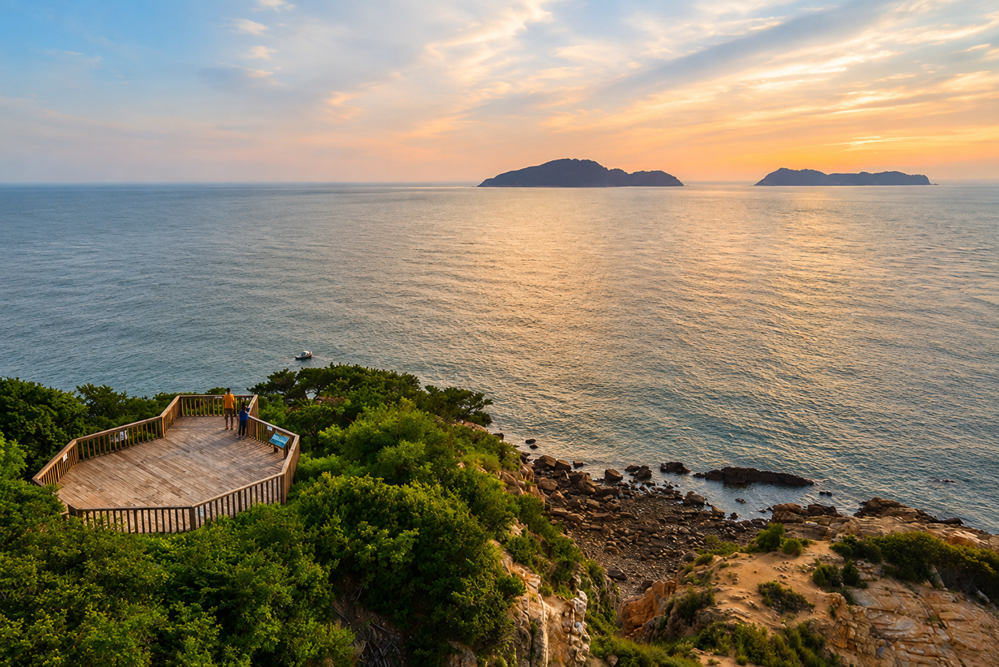
한들 해변과 숲길을 배경으로 즐기는 1박 캠핑. 별빛 토크, 캠프파이어, 로컬 먹거리 장터가 함께하는 가을 캠핑 축제입니다.
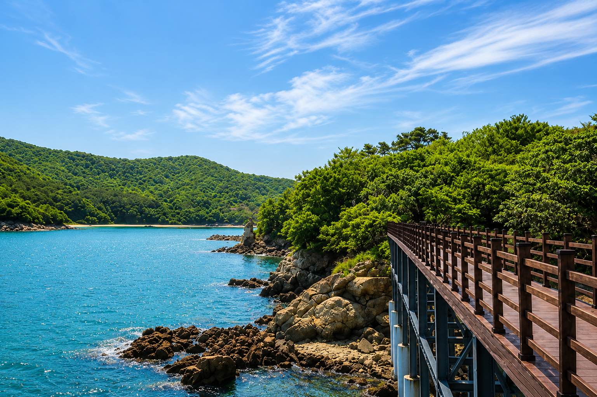
갯벌 체험과 카약, 해양 생태 교실이 열리는 한 달간의 체험 축제. 가족과 함께 자월도의 바다를 가까이에서 느껴보세요.
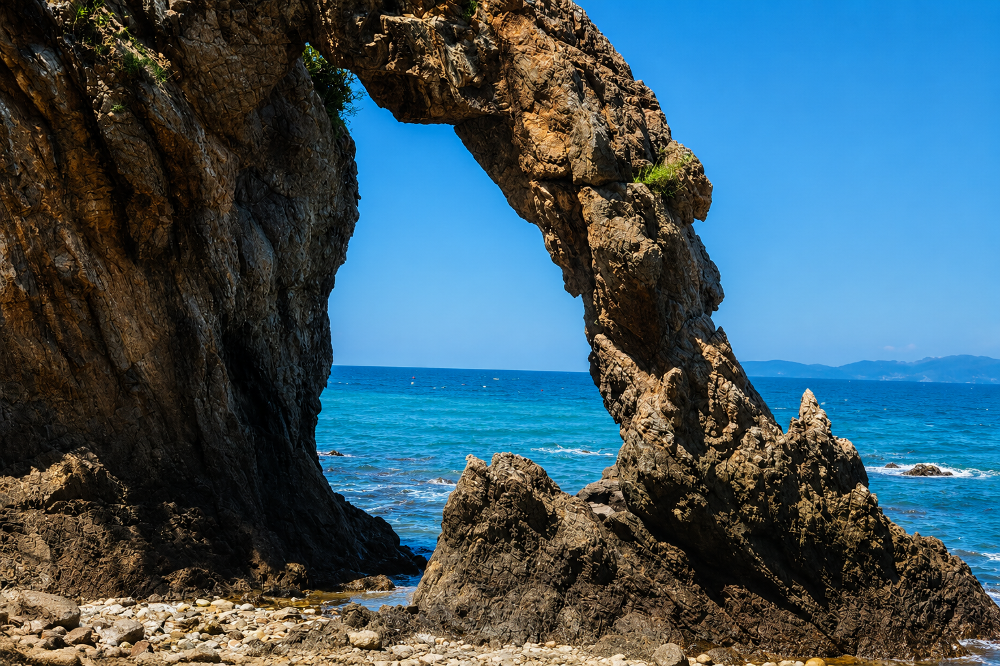
맑은 밤하늘 아래 펼쳐지는 어쿠스틱 공연과 별자리 해설. 승봉도의 고요한 해변에서 음악과 별을 함께 감상하는 감성 음악회입니다.
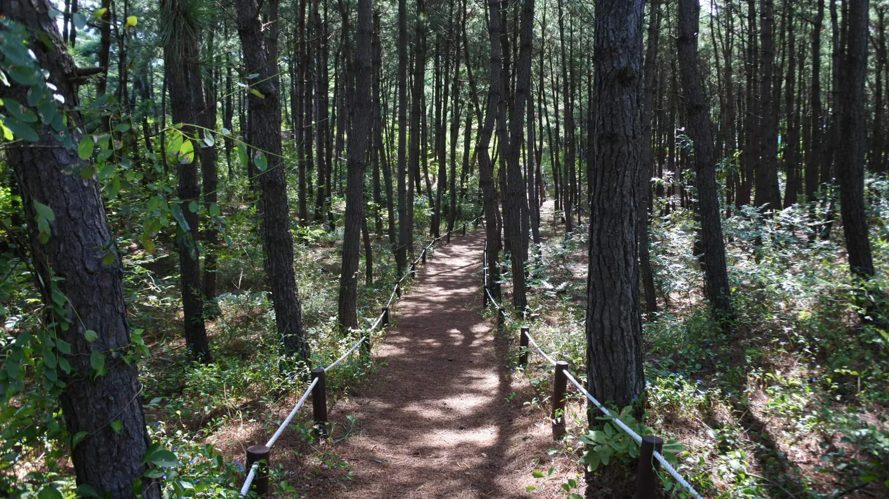
제철 해산물과 섬 특산 요리를 맛보는 미식 축제. 셰프 시연과 주민 레시피 공유, 해안 피크닉으로 덕적도의 맛을 즐겼던 행사입니다.

십리포 해안을 물들이는 서해 노을과 함께하는 야외 콘서트. 재즈와 발라드 공연으로 가을 저녁을 채워주는 영흥도 감성 축제입니다.
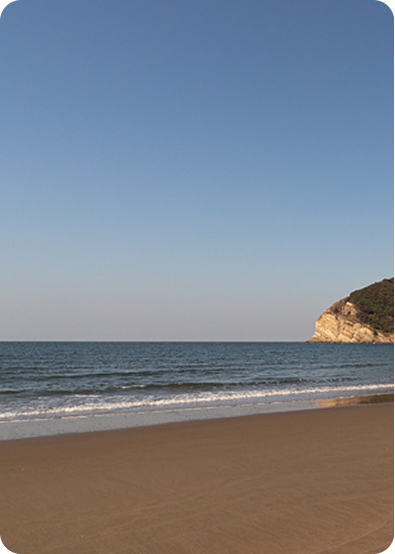
지질 명소와 해변을 따라가는 생태 해설 프로그램. 스트로마톨라이트와 모래울 해변을 탐방하며 대청도의 자연을 배우는 체험 축제입니다.
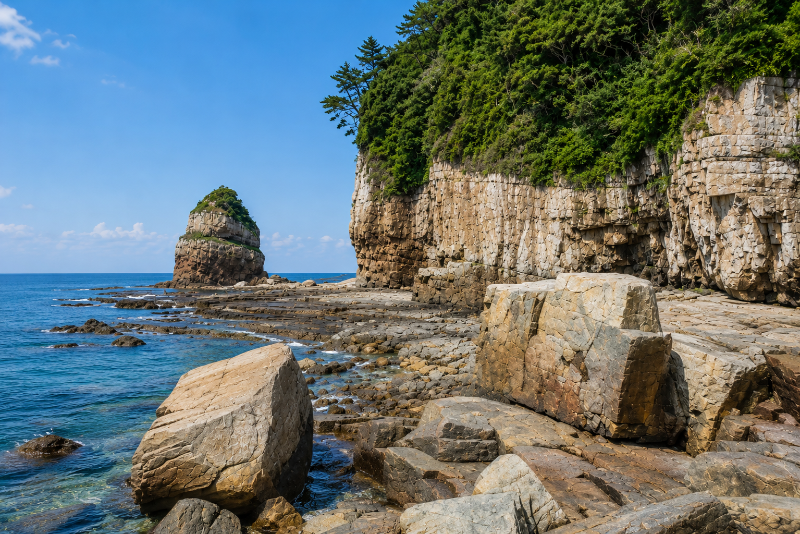
봄꽃이 핀 연평도 길을 천천히 걷는 걷기 축제. 포토존과 로컬 간식 부스, 주민 안내로 섬의 봄을 가까이에서 느낄 수 있었습니다.

해변 야외 스크린에서 즐기는 영화와 단편 상영회. 돗자리 피크닉과 푸드트럭이 함께하는 소야도의 여름밤 문화 축제입니다.
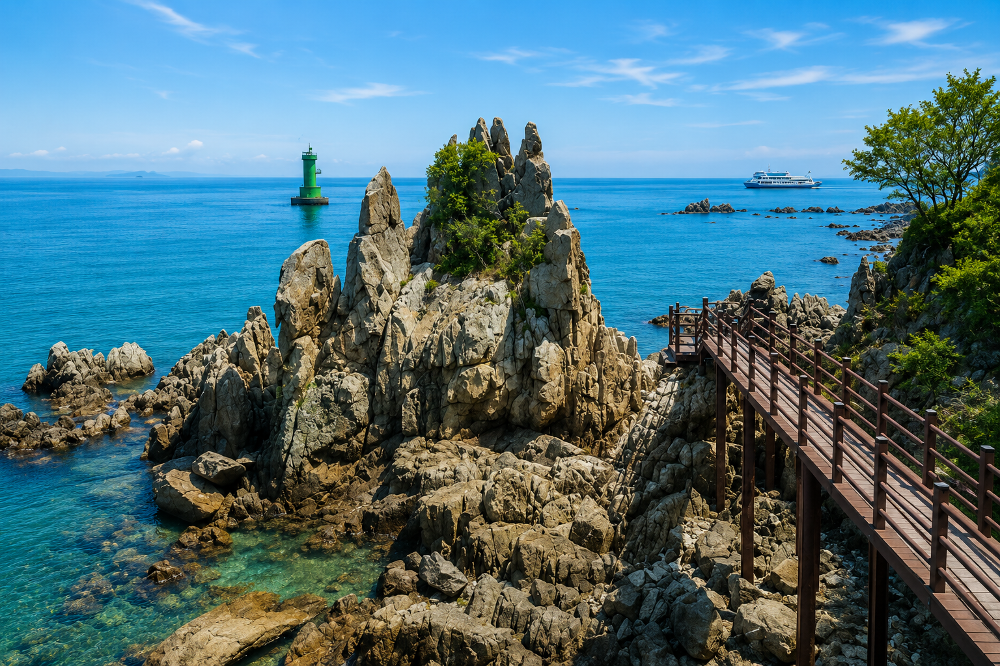
이작도의 해안 산책로와 전망 코스를 걷는 트레킹 데이. 가이드 해설과 완주 인증, 섬 간식으로 건강한 하루를 보낸 행사입니다.
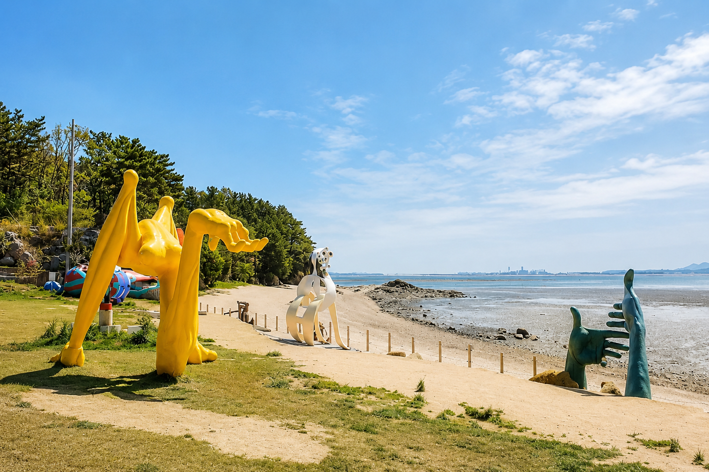
신도·시도·모도를 잇는 해안 라이딩과 포토 챌린지. 전동바이크 체험과 완주 인증으로 세 섬을 한날에 즐기는 자전거 축제입니다.

개머리언덕 초원에서 펼쳐지는 피크닉과 자연 해설 프로그램. 드넓은 초원과 바다를 배경으로 느긋한 하루를 보낸 섬 피크닉 축제입니다.
해당 상태의 행사가 없습니다.